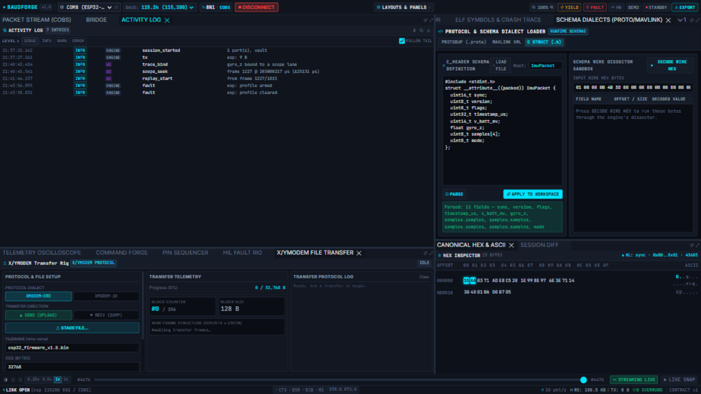

Activity Log
The Activity Log is one interleaved timeline of everything that happened in the session — what the engine did (tx, rec_start, overrun, transfer_arm…) and what you pressed (trace binds, scope seeks, replay, toasts). When a wire-level mystery appears, this is the first panel to open.

Reading a row
HH:MM:SS.mmm | LEVEL | SOURCE | event | detail
- LEVEL —
DEBUG,INFO,WARN,ERROR, filter chips at the top show levels at or above the selection (WARNhides info/debug noise, keeps errors). - SOURCE —
ENGINE(what the engine did) orUI(what a human clicked). - event — a short machine tag:
tx,tx_failed,rec_start,rec_stop,port_state,overrun,damaged_tail,bridge_set,elf_load,schema_apply,transfer_arm/cancel/drain,trace_bind,scope_seek,replay_start,toast,engine_error… - detail — the specifics:
esp: 9 B,obc: c_header (240 B of source),frame 1227 @ 263898217 µs.
The ring holds the last 2,000 entries; FOLLOW TAIL keeps the newest in view (uncheck — or scroll up — to freeze while you read).
What gets logged
- Engine: every command the workbench or CLI sends (TX, pins, yields, faults, REC, bridges, ELF loads, schema applies, transfers), lifecycle (
engine_start,port_state, session start/stop), and device trouble — overruns and damaged tails land asWARN. - UI: every toast, trace bind/unbind, scope seek, replay start/stop, launcher intent — and every failed engine call with the operation that produced it.
- Verbose mode: append
?debug=1to the page URL to also log debug-level UI actions.
Export
- COPY — the visible entries as plain text, straight to the clipboard.
- ⬇ DOWNLOAD — the visible entries as
.jsonl(one JSON object per line) — attach it to a bug report.
The vault's audit trail
When the engine shuts down, the whole ring is written next to the last recorded vault as <vault>.activity.jsonl — a capture carries its own "what happened while we recorded" record. Open a capture months later and the JSONL tells you which buttons were pressed during it.
Tips
tx_failedwithport "X" is not in this sessionmeans the UI was aimed at a port this engine does not have — check the DESTINATION badge.overrun(WARN) means slabs were dropped because a consumer fell behind — if you see it, your device outran the pipeline's reader; look at baud/framing before blaming the firmware.